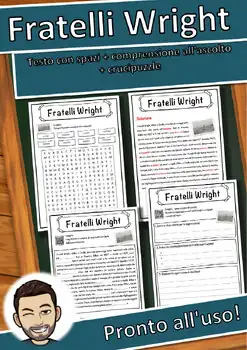
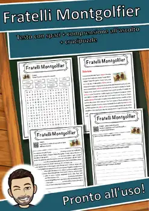
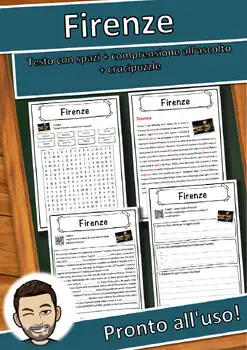
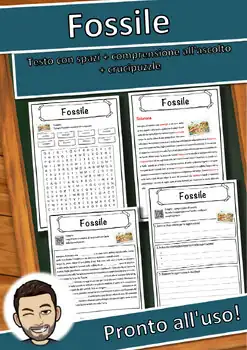

Grade 9
800 no-prep resources for grade 9 with answer keys: reading comprehension passages, reading trails, and math centers.
800 resources
Subject

World War I Reading Comprehension Passages | History Scavenger Hunt 8-9

Oil Refinery Reading Comprehension Passages | Chemistry Scavenger Hunt 8-9

Journey Through the Sun Reading Comprehension | Science Scavenger Hunt 8-9

Freno – Italian Reading: Cloze Text, Listening Task & Word Search (Scheda)

Freccette – Italian Reading: Cloze Text, Listening Task & Word Search (Scheda)

Frazione – Italian Reading: Cloze Text, Listening Task & Word Search (Scheda)

Fratturazione idraulica – Italian Reading: Cloze, Listening & Word Search

Fratercula arctica – Italian Reading: Cloze, Listening & Word Search

Fratelli Wright – Italian Reading: Cloze, Listening & Word Search

Fratelli Montgolfier – Italian Reading: Cloze, Listening & Word Search

Franz Schubert – Italian Reading: Cloze, Listening & Word Search

Franz Marc – Italian Reading: Cloze Text, Listening Task & Word Search (Scheda)

Franz Joseph Haydn – Italian Reading: Cloze, Listening & Word Search

Franz Beckenbauer – Italian Reading: Cloze, Listening & Word Search

Francobollo – Italian Reading: Cloze Text, Listening Task & Word Search (Scheda)

Firenze – Italian Reading: Cloze Text, Listening Task & Word Search (Scheda)

Francio – Italian Reading: Cloze Text, Listening Task & Word Search (Scheda)

Francesco d'Assisi – Italian Reading: Cloze, Listening & Word Search

Fragaria – Italian Reading: Cloze Text, Listening Task & Word Search (Scheda)

Fotosintesi clorofilliana – Italian Reading: Cloze, Listening & Word Search

Fotografia – Italian Reading: Cloze Text, Listening Task & Word Search (Scheda)

Fossile – Italian Reading: Cloze Text, Listening Task & Word Search (Scheda)

Fosforo – Italian Reading: Cloze Text, Listening Task & Word Search (Scheda)

Forza centrifuga – Italian Reading: Cloze, Listening & Word Search

Fortezza – Italian Reading: Cloze Text, Listening Task & Word Search (Scheda)

Formula 1 – Italian Reading: Cloze Text, Listening Task & Word Search (Scheda)

Formicidae – Italian Reading: Cloze Text, Listening Task & Word Search (Scheda)

Formaggio – Italian Reading: Cloze Text, Listening Task & Word Search (Scheda)

Foresta vergine – Italian Reading: Cloze, Listening & Word Search

Foresta pluviale – Italian Reading: Cloze, Listening & Word Search

Foresta bavarese – Italian Reading: Cloze, Listening & Word Search

Foresta – Italian Reading: Cloze Text, Listening Task & Word Search (Scheda)
Fonduta – Italian Reading: Cloze Text, Listening Task & Word Search (Scheda)

Folivora – Italian Reading: Cloze Text, Listening Task & Word Search (Scheda)
Fognatura – Italian Reading: Cloze Text, Listening Task & Word Search (Scheda)

Flerovio – Italian Reading: Cloze Text, Listening Task & Word Search (Scheda)

Fleischfressende Pflanze – Italian Reading: Cloze, Listening & Word Search

Fiume – Italian Reading: Cloze Text, Listening Task & Word Search (Scheda)
Fata – Italian Reading: Cloze Text, Listening Task & Word Search (Scheda)

Età del bronzo – Italian Reading: Cloze, Listening & Word Search

Fisica – Italian Reading: Cloze Text, Listening Task & Word Search (Scheda)

Finestra – Italian Reading: Cloze Text, Listening Task & Word Search (Scheda)

Filosofia – Italian Reading: Cloze Text, Listening Task & Word Search (Scheda)

Filippine – Italian Reading: Cloze Text, Listening Task & Word Search (Scheda)

Filadelfia – Italian Reading: Cloze Text, Listening Task & Word Search (Scheda)

Feto – Italian Reading: Cloze Text, Listening Task & Word Search (Scheda)

Fenici – Italian Reading: Cloze Text, Listening Task & Word Search (Scheda)

Felicità – Italian Reading: Cloze Text, Listening Task & Word Search (Scheda)
No resources found – try a different search term or filter.